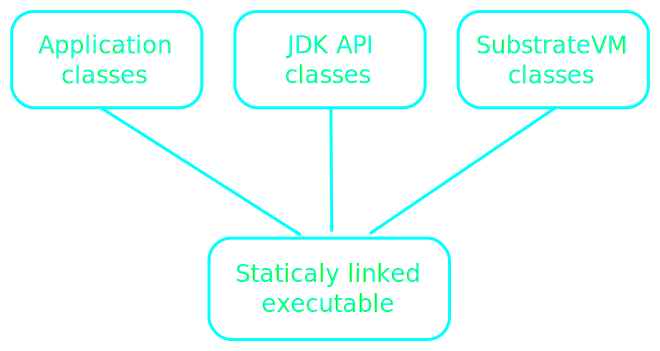
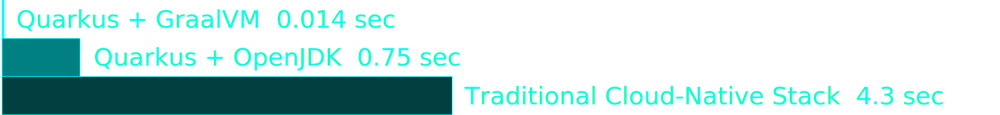
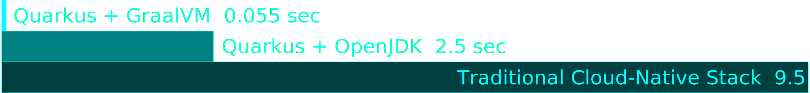
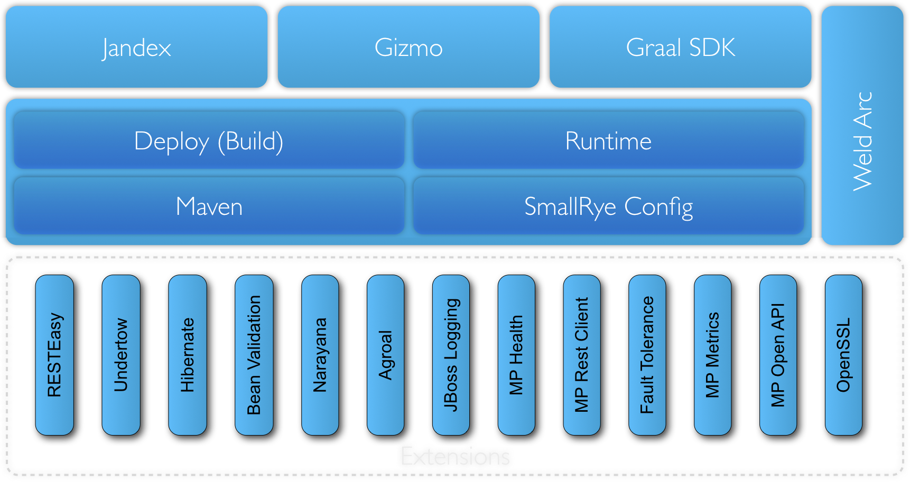

Quarkus & GraalVM
booting Hibernate at supersonic speed,
subatomic size
Sanne Grinovero
Dutch, Italian, now in London.
- Red Hat : Middleware R&D
- Hibernate team lead
- Quarkus, engineering team
- Also contributing to:
- GraalVM, OpenJDK, WildFly, Apache Lucene, Infinispan, Elasticsearch, JGroups, Byteman, Maven, Gradle, PostgreSQL, JakartaEE, Thorntail, ANTLR, Asciidoctor, ...
Agenda
- GraalVM & native images
- Quarkus
- Joy of live coding
- How ?!?
Native Image?
Let's see one in action...
$ export GRAALVM_HOME= //path to your GraalVM download, unpacked
$ export JAVA_HOME=$GRAALVM_HOME
$ mvn package
$ native-image -jar main.jar
$ ./main
There's some potential!
How about more complex apps?

AoT compilation with GraalVM
AoT compilation with GraalVM
- Static analysis
- Closed world assumption
- Dead code elimination:
classes, fields, methods, branches
Limitations
of GraalVM Native Images
Dynaminc Classloading
Deloying jars, wars, etc. at runtime impossible
JVMTI, JMX
+ other native VM interfaces
No agents
JRebel, Byteman, profilers, tracers, ...
JVMTI, JMX
+ other native VM interfaces- No Java debugger
- Native debugger (GDB) still works
- DWARF debug symbols
- Inserted only by GraalVM enterprise
- Allows stepping through your java code
Miscellaneous
Security Manager
finalize() (deprecated anyway)
InvokeDynamic and MethodHandles
Reflection
Requires registration via native-image CLI/API
More
Require registration via native-image CLI/API
- Dynamic proxies
- Resources
- JNI, Unsafe Memory Access, ...
Static init
Build time OpenJDK instance:
- Resolve classes, run "safe" static initializers
- Take a snapshot of the produced instances - prune the unreachable ones
- Include them in the executable
Static init
no file handles, sockets, threads
And all your dependencies need to get analyzed!
What's the impact on Hibernate ORM ?
Mindmap #3
How do you disable a feature anyway?
boolean jmxEnabled = parseConfiguration(...);
if (jmxEnabled) {
registerJMX();
}
static final JMX_ENABLED = false;
if (JMX_ENABLED) {
registerJMX();
}
What is Quarkus
Toolkit
andFramework
for writing Java1 applications1) and Kotlin
Existing standards
|
||
|
|
|
Established, reliable libraries you already know
| Eclipse Vert.x | Hibernate |
 RESTeasy
RESTeasy
|
 Apache Camel
Apache Camel
|
Netty |
| Kubernetes |
 Jaeger
Jaeger
|
 Prometheus
Prometheus
|
Apache Kafka |
 Infinispan
Infinispan
|
| Unifies | ||||
Imperative |
and | Reactive |
||
|
|
|||
Developer joy
- Easy to start with
- Live reload, a.k.a. dev mode
- Maven or Gradle
- Java or Kotlin
Container First
| 💾 | Small size on disk | ✓ | Small container images |
| 🚀 | Fast boot time | ✓ | Instant scale up |
| 🔬 | Low RSS1 memory
1) Resident Set Size |
✓ | More containers with the same RAM |
Measuring memory
RSS = all RAM consumed by the process
$ ps -o pid,rss,command -p $(pgrep quarkus)
PID RSS COMMAND
11229 12628 ./target/quarkus-helloMemory (RSS)
| Quarkus + GraalVM | Quarkus + OpenJDK | Traditional Cloud-Native Stack | |
| REST | 13 MB | 74 MB | 140 MB |
| REST+JPA | 35 MB | 130 MB | 218 MB |
Startup time
Often frameworks use lazy initialization
"started" before all classes are initialized
Time to first request
Time to first request
| REST |
|  |
| REST + JPA |
|  |
Dev joy? Show me!
Demo #2
How it works
Traditional app server
- Thousands of classes run only during the boot
- Later unused
- Still occupy memory
XML parsers, annotation lookups, management model, ...
Build time boot
As much work as possible done at build time
- Application model validation
- Configuration parsing
- Annotation lookup and evaluation
- ...
Output: recorded wiring bytecode
Wiring code invocation
Decided by extensions
static initializer |
OR | main() |
| preferred | access to files, sockets, etc. |
Core + Extensions
Quarkus extensions
- Required for frameworks that hit GraalVM limitations
- Opportunity to highly optimise also for JVM
- Code strictly separates build time analysis and runtime: extemely lean output!
Quarkus cheatsheets
https://quarkus.io/get-started/
$ mvn io.quarkus:quarkus-maven-plugin:0.13.3:create \
-DprojectGroupId=org.acme \
-DprojectArtifactId=quarkus-hello \
-DclassName="org.acme.quickstart.GreetingResource" \
-Dpath="/hello"
$ mvn package
$ java -jar target/*-runner.jar
INFO [io.quarkus] (main) Quarkus 0.11.0 started in 0.729s.
INFO [io.quarkus] (main) Installed features: [cdi, resteasy]
Native
https://quarkus.io/guides/building-native-image-guide
$ mvn package -Pnative
$ ls -lh target/*-runner
-rwxrwxr-x. 1 sanne sanne 17M Mar 20 14:39 target/quarkus-hello
$ ./target/*-runner
INFO [io.quarkus] (main) Quarkus 0.13.3 started in 0.003s.
INFO [io.quarkus] (main) Installed features: [cdi, resteasy]
dev mode
https://quarkus.io/guides/getting-started-guide
$ mvn compile quarkus:devTesting
https://quarkus.io/guides/getting-started-guide#testing
@QuarkusTest runner
JUnit 4 or 5
$ mvn clean testTesting native
https://quarkus.io/guides/building-native-image-guide.html#testing-the-native-executable
@SubstrateTest runner
$ mvn clean verify -PnativeAdd an extension
https://quarkus.io/guides/maven-tooling.html
$ mvn quarkus:add-extension -Dextensions=hibernate-orm-panachePanache
https://quarkus.io/guides/hibernate-orm-panache-guide
Makes simple Hibernate ORM easy
@Entity
public class Person extends PanacheEntity {
public String name;
public LocalDate birth;
public PersonStatus status;
}Panache persist
https://quarkus.io/guides/hibernate-orm-panache-guide
// Create a person
Person person = new Person();
person.name = "Stef";
// Persist and delete
person.persist();
person.delete();Panache Queries
https://quarkus.io/guides/hibernate-orm-panache-guide
List<Person> allPersons = Person.listAll(); // All persons
Person p = Person.findById(personId); // Specific person by ID
// Living persons
List<Person> livingPersons = Person.list("status", Status.Alive);
// Count
int countAll = Person.count();
int countAlive = Person.count("status", Status.Alive);
// Delete
Person.delete("status", Status.Alive);
Person.deleteAll();More Panache
https://quarkus.io/guides/hibernate-orm-panache-guide
- Paging
- Sorting
- Simplified query language
- Autogenerated DAO/Repositories
Other extensions
Discover them
https://quarkus.io/guides/maven-tooling.html
$ mvn quarkus:list-extensions
...
Available extensions:
...
* Hibernate ORM (io.quarkus:quarkus-hibernate-orm)
* Hibernate ORM with Panache (io.quarkus:quarkus-hibernate-orm-panache)
* Hibernate Validator (io.quarkus:quarkus-hibernate-validator)
...
Other extensions
Contribute them!
- ASL2
- Open community
Quarkus wrap up
- Good old Java
- Using libraries and standards you already know
- Can go small as Go, works great on JVM too
Makes Java the choice #1 for the cloud and serverless
Version 0.x.y ?
Early days!
OSS shouldn't become open just after 1.0: joining a project early is more fun!
Based on familiar, stable libraries
Thank you all!
Q&A
- Docs & guides: https://quarkus.io/
- Quickstarts: github/quarkusio/quarkus-quickstarts
- Stack Overflow tag: quarkus